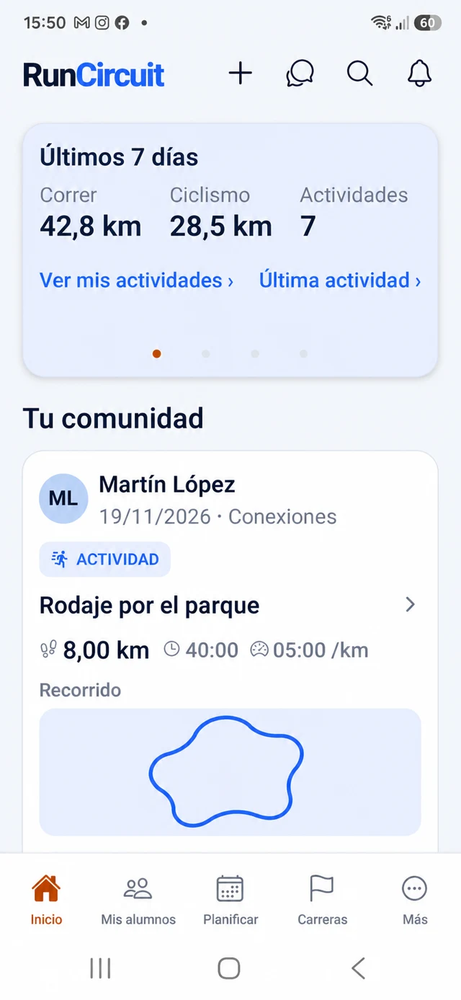
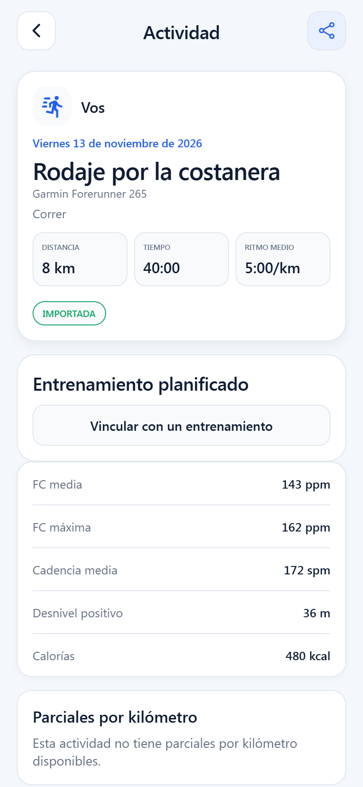
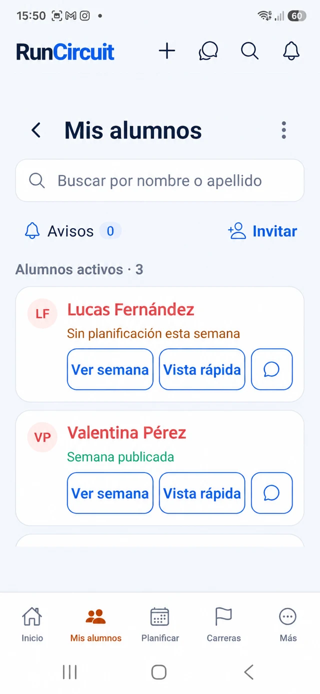
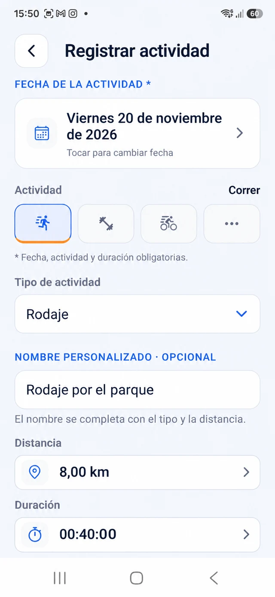
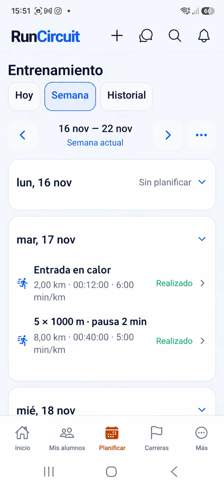
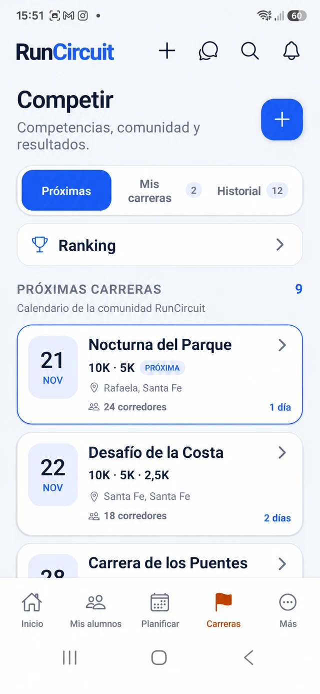
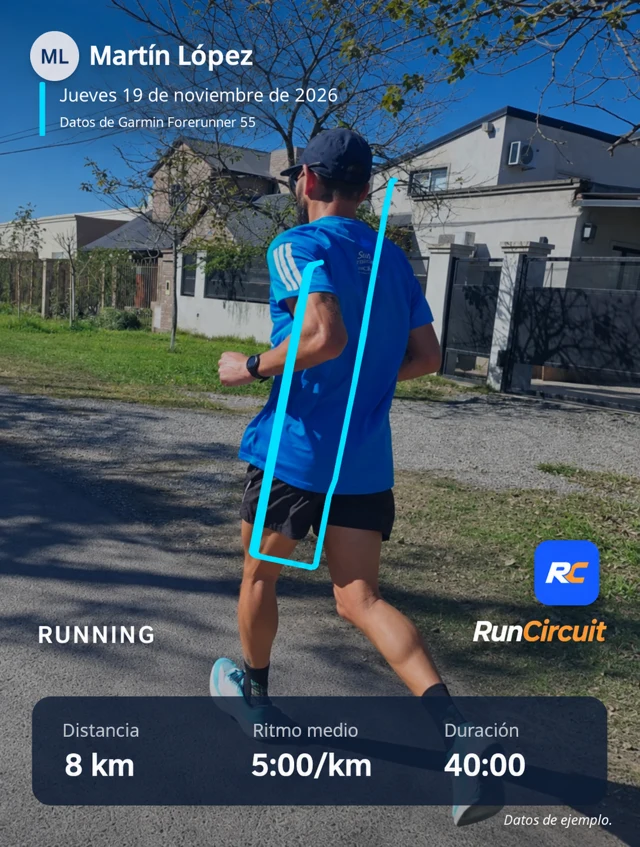

Calendario de carreras
Descubrí próximas competencias, distancias y toda la información en un mismo lugar.
Mirá tus últimos 7 días, organizá tus entrenamientos y prepará tu próxima carrera. Sincronizá tus actividades con Garmin Connect y compartí tu progreso con la comunidad.
Gratis · Versión beta v0.8.9 · APK para Android

Pantalla de la app con datos de ejemploLas actividades nuevas aparecen en tu historial de RunCircuit cuando se sincronizan con Garmin Connect. Podés consultar la distancia, el tiempo, el ritmo o la velocidad y la frecuencia cardíaca cuando Garmin envía esos datos.
La importación también recupera los parciales y las vueltas cuando están disponibles en el archivo de Garmin. Así podés revisar cada tramo de tu entrenamiento.

Descubrí próximas competencias, distancias y toda la información en un mismo lugar.
Compará tus resultados por distancia, categoría, sexo y ubicación.
Encontrá corredores y conectá. Compartí actividades y carreras, participá con Me gusta, comentarios y respuestas.
Registrá entrenamientos, carreras, récords y seguí tu evolución.
Tu actividad reciente, el detalle de cada entrenamiento y tu planificación, en un mismo lugar.
Consultá los kilómetros de hoy y los seis días anteriores. El resumen de actividad se mueve con vos: no vuelve a cero cada lunes.
Explorá las pantallasRevisá los parciales por kilómetro y las vueltas disponibles de tus actividades importadas. El detalle depende de los datos registrados por Garmin.
Seguí tus salidas a pie y en bici. Consultá el ritmo en running, la velocidad media en ciclismo y la frecuencia cardíaca cuando esté disponible.
Organizá rodajes, pasadas, bloques y fondos. Tu plan conserva sus fechas semanales para que puedas comparar lo programado con lo realizado.
Abrí la semana de cada alumno desde su ficha y dejale una devolución privada sobre su entrenamiento.
Elegí las métricas y el estilo de tu tarjeta de actividad para compartir tus resultados. En la comunidad podés participar con Me gusta, comentarios y respuestas.
Pantallas de RunCircuit con nombres, actividades y estadísticas ficticias para ilustrar sus funciones.
Deslizá para explorar o elegí una pantalla para ampliarla.
Tus kilómetros recientes, objetivos y novedades de la comunidad.

Consultá su planificación, abrí la vista rápida y enviá mensajes.

Cargá tus entrenamientos con su tipo, distancia y duración.

Organizá tus sesiones y revisá lo que ya hiciste.

Explorá competencias, guardá tus carreras y consultá el ranking.

Compartí una tarjeta de tu actividad con tu foto y tus métricas.
El calendario de la comunidad reúne competencias para que puedas descubrir qué correr y dónde.
Competencias ficticias que ilustran parte del calendario de RunCircuit.
Consultá el calendario actualizado dentro de la app, con las carreras publicadas por la comunidad.
Compará tus resultados con otros corredores por distancia y categoría.
Ejemplo ilustrativo · corredores ficticios
Buscá por nombre, ciudad o club a corredores que forman parte de RunCircuit.
Generá conexiones, conversá por mensajes privados y construí tu comunidad de running.
Explorá perfiles, carreras y la actividad competitiva de otros corredores.
RunCircuit también te ayuda a registrar y organizar tu propia actividad como corredor.
Registrá rodajes, pasadas, bloques, fondos y otras actividades.
Conservá tus resultados y competencias en un único historial.
Seguí tus mejores marcas en las principales distancias.
Visualizá tu evolución y mantené tus objetivos siempre presentes.
RunCircuit nace con una idea simple: reunir en un mismo lugar las carreras, los resultados, los rankings y la comunidad que forma parte del running.
Una plataforma creada en Argentina para corredores, con la mirada puesta en seguir creciendo.
Descargá RunCircuit para Android y sumate a probar la beta. Encontrá tu actividad de los últimos 7 días, entrenamientos ordenados por fecha y el detalle de Garmin Connect en un mismo lugar.